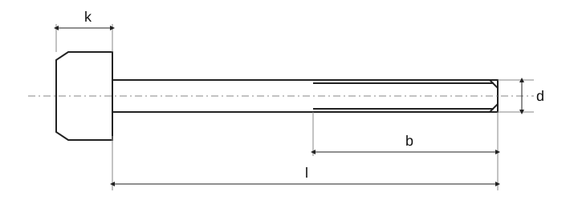

Částečný závit · C · ISO 4016

Částečný závit · C · ISO 4016 · Normový kontext
| Položka | Hodnota |
|---|---|
| Normový kontext | ISO 4016:2022 |
| Výrobní třída | C |
| Pevnostní třída | Úplné znění normy je potřeba k ověření rozměrů, tolerancí a všech podmínek. |
Částečný závit · C · ISO 4016 · M5-M27 · Rozměry
Historický podklad; číselné hodnoty a výjimky nejsou úplně ověřené proti platné normě.
| Parametr | M5 | M6 | M8 | M10 | M12 | (M14) | M16 | (M18) | M20 | (M22) | M24 | (M27) |
|---|---|---|---|---|---|---|---|---|---|---|---|---|
| P | 0,8 | 1 | 1,25 | 1,5 | 1,75 | 2 | 2 | 2,5 | 2,5 | 2,5 | 3 | 3 |
| b 2) | 16 | 18 | 22 | 26 | 30 | 34 | 38 | 42 | 46 | 50 | 54 | 60 |
| b 3) | - | - | - | - | - | 40 | 44 | 48 | 52 | 56 | 60 | 66 |
| b 4) | - | - | - | - | - | - | - | - | - | 69 | 73 | 79 |
| c _max. | 0,5 | 0,5 | 0,5 | 0,6 | 0,6 | 0,6 | 0,6 | 0,8 | 0,8 | 0,8 | 0,8 | 0,8 |
| d _a max. | 6 | 7,2 | 10,2 | 12,2 | 14,7 | 16,7 | 18,7 | 21,2 | 24,4 | 26,4 | 28,4 | 32,4 |
| d _s max. | 5,48 | 6,48 | 8,58 | 10,58 | 12,2 | 14,7 | 16,7 | 18,7 | 20,84 | 22,84 | 24,84 | 27,84 |
| d _s min. | 4,52 | 5,52 | 7,42 | 9,42 | 11,3 | 13,3 | 15,3 | 17,3 | 19,6 | 21,16 | 23,16 | 25,16 |
| d _w min. | 6,74 | 8,74 | 11,47 | 14,47 | 16,47 | 19,15 | 22 | 24,85 | 27,7 | 31,35 | 33,25 | 38 |
| e _min. | 8,63 | 1,89 | 14,2 | 17,59 | 19,85 | 22,87 | 26,17 | 29,56 | 32,95 | 37,29 | 39,55 | 45,2 |
| k | 3,5 | 4,0 | 5,3 | 6,4 | 7,5 | 8,8 | 10 | 11,5 | 12,5 | 14 | 15 | 17 |
| Δk | 0,375 | 0,375 | 0,375 | 0,45 | 0,45 | 0,45 | 0,75 | 0,9 | 0,9 | 0,9 | 0,9 | 0,9 |
| r _min. | 0,2 | 0,25 | 0,4 | 0,4 | 0,6 | 0,6 | 0,6 | 0,6 | 0,8 | 0,8 | 0,8 | 1 |
| s _max. | 8 | 10 | 13 | 16 | 18 | 21 | 24 | 27 | 30 | 34 | 36 | 41 |
| s _min. | 7,64 | 9,64 | 12,57 | 15,57 | 17,57 | 20,16 | 23,16 | 26,16 | 29,16 | 33 | 35 | 40 |
Částečný závit · C · ISO 4016 · M5-M27 · Délky a kombinace
Historický podklad; číselné hodnoty a výjimky nejsou úplně ověřené proti platné normě.
| l | Δl | l _s l _g^5) 6) | M5 | M6 | M8 | M10 | M12 | (M14) | M16 | (M18) | M20 | (M22) | M24 | (M27) | ? | ? |
|---|---|---|---|---|---|---|---|---|---|---|---|---|---|---|---|---|
| 25 | ±1,05 | l _s min. / l _g max. | 5 / 9 | — | — | — | — | — | — | — | — | — | — | — | — | — |
| 30 | ±1,05 | l _s min. / l _g max. | 10 / 14 | 7 / 12 | — | — | — | — | — | — | — | — | — | — | — | — |
| 35 | ±1,25 | l _s min. / l _g max. | 15 / 19 | 7 / 12 | → ISO 4018 | → ISO 4018 | → ISO 4018 | → ISO 4018 | → ISO 4018 | → ISO 4018 | → ISO 4018 | → ISO 4018 | → ISO 4018 | → ISO 4018 | — | — |
| 40 | ±1,25 | l _s min. / l _g max. | 20 / 24 | 17 / 22 | 11,75 / 18 | — | — | — | — | — | — | — | — | — | — | — |
| 45 | ±1,25 | l _s min. / l _g max. | 25 / 29 | 22 / 27 | 16,75 / 23 | 11,5 / 19 | — | — | — | — | — | — | — | — | — | — |
| 50 | ±1,25 | l _s min. / l _g max. | 30 / 34 | 27 / 32 | 21,75 / 28 | 16,5 / 24 | — | — | — | — | — | — | — | — | — | — |
| 55 | ±1,5 | l _s min. / l _g max. | — | 32 / 37 | 26,75 / 33 | 21,5 / 29 | 16,25 / 25 | — | — | — | — | — | — | — | — | — |
| 60 | ±1,5 | l _s min. / l _g max. | — | 37 / 42 | 31,75 / 38 | 26,5 / 34 | 21,25 / 30 | 16 / 26 | — | — | — | — | — | — | — | — |
| 65 | ±1,5 | l _s min. / l _g max. | — | — | 36,75 / 43 | 31,5 / 39 | 26,25 / 35 | 21 / 31 | 17 / 27 | — | — | — | — | — | — | — |
| 70 | ±1,5 | l _s min. / l _g max. | — | — | 41,75 / 48 | 36,5 / 44 | 31,25 / 40 | 26 / 36 | 22 / 32 | — | — | — | — | — | — | — |
| 80 | ±1,5 | l _s min. / l _g max. | — | — | 51,75 / 58 | 46,5 / 54 | 41,25 / 50 | 36 / 46 | 32 / 42 | 25,5 / 38 | 21,5 / 34 | — | — | — | — | — |
| 90 | ±1,75 | l _s min. / l _g max. | — | — | — | 56,5 / 64 | 51,25 / 60 | 46 / 56 | 42 / 52 | 35,5 / 48 | 31,5 / 44 | 27,5 / 40 | — | — | — | — |
| 100 | ±1,75 | l _s min. / l _g max. | — | — | — | 66,5 / 74 | 61,25 / 70 | 56 / 66 | 52 / 62 | 45,5 / 58 | 41,5 / 54 | 37,5 / 50 | 31 / 46 | — | — | — |
| 110 | ±1,75 | l _s min. / l _g max. | — | — | — | — | 71,25 / 80 | 66 / 76 | 62 / 72 | 55,5 / 68 | 51,5 / 64 | 47,5 / 60 | 41 / 56 | 35 / 50 | — | — |
| 120 | ±1,75 | l _s min. / l _g max. | — | — | — | — | 81,25 / 90 | 76 / 86 | 72 / 82 | 65,5 / 78 | 61,5 / 74 | 57,5 / 70 | 51 / 66 | 45 / 60 | — | — |
| 130 | ±2 | l _s min. / l _g max. | — | — | — | — | — | 80 / 90 | 76 / 86 | 69,5 / 82 | 65,5 / 78 | 61,5 / 74 | 55 / 70 | 49 / 64 | — | — |
| 140 | ±2 | l _s min. / l _g max. | — | — | — | — | — | 90 / 100 | 86 / 96 | 79,5 / 92 | 75,5 / 88 | 71,5 / 84 | 65 / 80 | 59 / 74 | — | — |
| 150 | ±2 | l _s min. / l _g max. | — | — | — | — | — | — | 96 / 106 | 89,5 / 102 | 85,5 / 98 | 81,5 / 94 | 75 / 90 | 69 / 84 | — | — |
| 160 | ±4 | l _s min. / l _g max. | — | — | — | — | — | — | 106 / 116 | 99,5 / 112 | 95,5 / 108 | 91,5 / 104 | 85 / 100 | 79 / 94 | — | — |
| 180 | ±4 | l _s min. / l _g max. | — | — | — | — | — | — | — | 119,5 / 132 | 115,5 / 128 | 111,5 / 124 | 105 / 120 | 99 / 114 | — | — |
| 200 | ±4,6 | l _s min. / l _g max. | — | — | — | — | — | — | — | — | 135,5 / 148 | 131,5 / 144 | 125 / 140 | 119 / 134 | — | — |
| 220 | ±4,6 | l _s min. / l _g max. | — | — | — | — | — | — | — | — | — | 138,5 / 151 | 132 / 147 | 126 / 141 | — | — |
| 240 | ±4,6 | l _s min. / l _g max. | — | — | — | — | — | — | — | — | — | — | 152 / 167 | 146 / 161 | — | — |
| 260 | ±4,6 | l _s min. / l _g max. | — | — | — | — | — | — | — | — | — | — | — | 166 / 181 | — | — |
Částečný závit · C · ISO 4016 · M30-M64 · Rozměry
Historický podklad; číselné hodnoty a výjimky nejsou úplně ověřené proti platné normě.
| Parametr | M30 | (M33) | M36 | (M39) | M42 | (M45) | M48 | (M52) | M56 | (M60) | M64 |
|---|---|---|---|---|---|---|---|---|---|---|---|
| P | 3,5 | 3,5 | 4 | 4 | 4,5 | 4,5 | 5 | 5 | 5,5 | 5,5 | 6 |
| b 2) | 66 | - | - | - | - | - | - | - | - | - | - |
| b 3) | 72 | 78 | 84 | 90 | 96 | 102 | 108 | 116 | - | - | - |
| b 4) | 85 | 91 | 97 | 103 | 109 | 115 | 121 | 129 | 137 | 145 | 153 |
| c _max. | 0,8 | 0,8 | 0,8 | 1 | 1 | 1 | 1 | 1 | 1 | 1 | 1 |
| d _a max. | 35,4 | 38,4 | 42,4 | 45,4 | 48,6 | 52,6 | 56,6 | 62,6 | 67 | 71 | 75 |
| d _s max. | 30,84 | 34 | 37 | 40 | 43 | 46 | 49 | 53,2 | 57,2 | 61,2 | 65,2 |
| d _s min. | 29,16 | 32 | 35 | 38 | 41 | 44 | 47 | 50,8 | 54,8 | 58,8 | 62,8 |
| d _w min. | 42,75 | 46,55 | 51,11 | 55,86 | 59,95 | 64,7 | 69,45 | 74,2 | 78,66 | 83,41 | 88,16 |
| e _min. | 50,85 | 55,37 | 60,79 | 66,44 | 71,3 | 76,95 | 82,6 | 88,25 | 93,56 | 99,21 | 104,86 |
| k | 18,7 | 21 | 22,5 | 25 | 26 | 28 | 30 | 33 | 35 | 38 | 40 |
| Δk | 1,05 | 1,05 | 1,05 | 1,05 | 1,05 | 1,05 | 1,05 | 1,25 | 1,25 | 1,25 | 1,25 |
| r _min. | 1 | 1 | 1 | 1 | 1,2 | 1,2 | 1,6 | 1,6 | 2 | 2 | 2 |
| s _max. | 46 | 50 | 55 | 60 | 65 | 70 | 75 | 80 | 85 | 90 | 95 |
| s _min. | 45 | 49 | 53,8 | 58,8 | 63,1 | 68,1 | 73,1 | 78,1 | 82,8 | 87,8 | 92,8 |
Částečný závit · C · ISO 4016 · M30-M64 · Délky a kombinace
Historický podklad; číselné hodnoty a výjimky nejsou úplně ověřené proti platné normě.
| l | Δl | l _s l _g^5) 6) | M30 | (M33) | M36 | (M39) | M42 | (M45) | M48 | (M52) | M56 | (M60) | M64 |
|---|---|---|---|---|---|---|---|---|---|---|---|---|---|
| 120 | ±1,75 | l _s min. / l _g max. | 36,5 / 54 | — | — | — | — | — | — | — | — | — | — |
| 130 | ±2 | l _s min. / l _g max. | 40,5 / 58 | 34,5 / 51 | — | — | — | — | — | — | — | — | — |
| 140 | ±2 | l _s min. / l _g max. | 50,5 / 68 | 44,5 / 62 | 36 / 56 | → ISO 4018 | → ISO 4018 | → ISO 4018 | → ISO 4018 | → ISO 4018 | → ISO 4018 | → ISO 4018 | → ISO 4018 |
| 150 | ±2 | l _s min. / l _g max. | 60,5 / 78 | 54,5 / 72 | 46 / 66 | 40 / 60 | — | — | — | — | — | — | — |
| 160 | ±4 | l _s min. / l _g max. | 70,5 / 88 | 64,5 / 82 | 56 / 76 | 50 / 70 | — | — | — | — | — | — | — |
| 180 | ±4 | l _s min. / l _g max. | 90,5 / 108 | 84,5 / 102 | 76 / 96 | 70 / 90 | 61,5 / 84 | 55,5 / 78 | — | — | — | — | — |
| 200 | ±4,6 | l _s min. / l _g max. | 110,5 / 128 | 104,5 / 122 | 96 / 116 | 90 / 110 | 81,5 / 104 | 75,5 / 98 | 67 / 92 | 59 / 84 | — | — | — |
| 220 | ±4,6 | l _s min. / l _g max. | 117,5 / 135 | 111,5 / 129 | 103 / 123 | 97 / 117 | 88,5 / 111 | 82,5 / 105 | 74 / 99 | 66 / 91 | — | — | — |
| 240 | ±4,6 | l _s min. / l _g max. | 137,5 / 155 | 131,5 / 149 | 123 / 143 | 117 / 137 | 108,5 / 131 | 102,5 / 125 | 94 / 119 | 86 / 111 | 75,5 / 103 | 67,5 / 95 | — |
| 260 | ±5,2 | l _s min. / l _g max. | 157,5 / 175 | 151,5 / 169 | 143 / 163 | 137 / 157 | 128,5 / 151 | 122,5 / 145 | 114 / 139 | 106 / 131 | 95,5 / 123 | 87,5 / 115 | 77 / 107 |
| 280 | ±5,2 | l _s min. / l _g max. | 177,5 / 195 | 171,5 / 189 | 163 / 183 | 157 / 177 | 148,5 / 171 | 142,5 / 165 | 134 / 159 | 126 / 151 | 115,5 / 143 | 107,5 / 135 | 97 / 127 |
| 300 | ±5,2 | l _s min. / l _g max. | 197,5 / 215 | 191,5 / 209 | 183 / 203 | 177 / 197 | 168,5 / 191 | 162,5 / 185 | 154 / 179 | 146 / 171 | 135,5 / 163 | 127,5 / 155 | 117 / 147 |
| 320 | ±5,7 | l _s min. / l _g max. | — | 211,5 / 229 | 203 / 223 | 197 / 217 | 188,5 / 211 | 182,5 / 205 | 174 / 199 | 166 / 191 | 155,5 / 183 | 147,5 / 175 | 137 / 167 |
| 340 | ±5,7 | l _s min. / l _g max. | — | — | 223 / 243 | 217 / 237 | 208,5 / 231 | 202,5 / 245 | 214 / 239 | 186 / 211 | 175,5 / 203 | 167,5 / 195 | 157 / 187 |
| 360 | ±5,7 | l _s min. / l _g max. | — | — | 223 / 243 | 237 / 257 | 228,5 / 251 | 222,5 / 265 | 234 / 259 | 206 / 231 | 195,5 / 223 | 187,5 / 215 | 177 / 207 |
| 380 | ±5,7 | l _s min. / l _g max. | — | — | — | 257 / 277 | 248,5 / 271 | 242,5 / 265 | 234 / 259 | 226 / 251 | 215,5 / 243 | 207,5 / 235 | 197 / 227 |
| 400 | ±5,7 | l _s min. / l _g max. | — | — | — | 277 / 297 | 268,5 / 291 | 262,5 / 285 | 254 / 279 | 246 / 271 | 235,5 / 263 | 227,5 / 255 | 217 / 247 |
| 420 | ±6,3 | l _s min. / l _g max. | — | — | — | — | 288,5 / 311 | 282,5 / 305 | 274 / 299 | 266 / 291 | 255,5 / 283 | 247,5 / 275 | 237 / 267 |
| 440 | ±6,3 | l _s min. / l _g max. | — | — | — | — | — | 302,5 / 325 | 294 / 319 | 286 / 311 | 275,5 / 303 | 267,5 / 295 | 257 / 287 |
| 460 | ±6,3 | l _s min. / l _g max. | — | — | — | — | — | — | 314 / 339 | 306 / 331 | 295,5 / 323 | 287,5 / 315 | 277 / 307 |
| 480 | ±6,3 | l _s min. / l _g max. | — | — | — | — | — | — | 334 / 359 | 326 / 351 | 315,5 / 343 | 307,5 / 335 | 297 / 327 |
| 500 | ±6,3 | l _s min. / l _g max. | — | — | — | — | — | — | — | 346 / 371 | 335,5 / 363 | 327,5 / 355 | 317 / 347 |
Částečný závit · C · ISO 4016 · Normový kontext
| Položka | Hodnota |
|---|---|
| Normový kontext | ISO 4016:2022 |
| Výrobní třída | C |
| Pevnostní třída | Úplné znění normy je potřeba k ověření rozměrů, tolerancí a všech podmínek. |
Částečný závit · C · ISO 4016 · M5-M27 · Rozměry
Historický podklad; číselné hodnoty a výjimky nejsou úplně ověřené proti platné normě.
| Parametr | M5 | M6 | M8 | M10 | M12 | (M14) |
|---|---|---|---|---|---|---|
| P | 0,8 | 1 | 1,25 | 1,5 | 1,75 | 2 |
| b 2) | 16 | 18 | 22 | 26 | 30 | 34 |
| b 3) | - | - | - | - | - | 40 |
| b 4) | - | - | - | - | - | - |
| c _max. | 0,5 | 0,5 | 0,5 | 0,6 | 0,6 | 0,6 |
| d _a max. | 6 | 7,2 | 10,2 | 12,2 | 14,7 | 16,7 |
| d _s max. | 5,48 | 6,48 | 8,58 | 10,58 | 12,2 | 14,7 |
| d _s min. | 4,52 | 5,52 | 7,42 | 9,42 | 11,3 | 13,3 |
| d _w min. | 6,74 | 8,74 | 11,47 | 14,47 | 16,47 | 19,15 |
| e _min. | 8,63 | 1,89 | 14,2 | 17,59 | 19,85 | 22,87 |
| k | 3,5 | 4,0 | 5,3 | 6,4 | 7,5 | 8,8 |
| Δk | 0,375 | 0,375 | 0,375 | 0,45 | 0,45 | 0,45 |
| r _min. | 0,2 | 0,25 | 0,4 | 0,4 | 0,6 | 0,6 |
| s _max. | 8 | 10 | 13 | 16 | 18 | 21 |
| s _min. | 7,64 | 9,64 | 12,57 | 15,57 | 17,57 | 20,16 |
Částečný závit · C · ISO 4016 · M5-M27 · Rozměry
Historický podklad; číselné hodnoty a výjimky nejsou úplně ověřené proti platné normě.
| Parametr | M16 | (M18) | M20 | (M22) | M24 | (M27) |
|---|---|---|---|---|---|---|
| P | 2 | 2,5 | 2,5 | 2,5 | 3 | 3 |
| b 2) | 38 | 42 | 46 | 50 | 54 | 60 |
| b 3) | 44 | 48 | 52 | 56 | 60 | 66 |
| b 4) | - | - | - | 69 | 73 | 79 |
| c _max. | 0,6 | 0,8 | 0,8 | 0,8 | 0,8 | 0,8 |
| d _a max. | 18,7 | 21,2 | 24,4 | 26,4 | 28,4 | 32,4 |
| d _s max. | 16,7 | 18,7 | 20,84 | 22,84 | 24,84 | 27,84 |
| d _s min. | 15,3 | 17,3 | 19,6 | 21,16 | 23,16 | 25,16 |
| d _w min. | 22 | 24,85 | 27,7 | 31,35 | 33,25 | 38 |
| e _min. | 26,17 | 29,56 | 32,95 | 37,29 | 39,55 | 45,2 |
| k | 10 | 11,5 | 12,5 | 14 | 15 | 17 |
| Δk | 0,75 | 0,9 | 0,9 | 0,9 | 0,9 | 0,9 |
| r _min. | 0,6 | 0,6 | 0,8 | 0,8 | 0,8 | 1 |
| s _max. | 24 | 27 | 30 | 34 | 36 | 41 |
| s _min. | 23,16 | 26,16 | 29,16 | 33 | 35 | 40 |
Částečný závit · C · ISO 4016 · M5-M27 · Délky a kombinace
Historický podklad; číselné hodnoty a výjimky nejsou úplně ověřené proti platné normě.
| l | Δl | l _s l _g^5) 6) | M5 | M6 | M8 | M10 |
|---|---|---|---|---|---|---|
| 25 | ±1,05 | l _s min. / l _g max. | 5 / 9 | — | — | — |
| 30 | ±1,05 | l _s min. / l _g max. | 10 / 14 | 7 / 12 | — | — |
| 35 | ±1,25 | l _s min. / l _g max. | 15 / 19 | 7 / 12 | → ISO 4018 | → ISO 4018 |
| 40 | ±1,25 | l _s min. / l _g max. | 20 / 24 | 17 / 22 | 11,75 / 18 | — |
| 45 | ±1,25 | l _s min. / l _g max. | 25 / 29 | 22 / 27 | 16,75 / 23 | 11,5 / 19 |
| 50 | ±1,25 | l _s min. / l _g max. | 30 / 34 | 27 / 32 | 21,75 / 28 | 16,5 / 24 |
| 55 | ±1,5 | l _s min. / l _g max. | — | 32 / 37 | 26,75 / 33 | 21,5 / 29 |
| 60 | ±1,5 | l _s min. / l _g max. | — | 37 / 42 | 31,75 / 38 | 26,5 / 34 |
| 65 | ±1,5 | l _s min. / l _g max. | — | — | 36,75 / 43 | 31,5 / 39 |
| 70 | ±1,5 | l _s min. / l _g max. | — | — | 41,75 / 48 | 36,5 / 44 |
| 80 | ±1,5 | l _s min. / l _g max. | — | — | 51,75 / 58 | 46,5 / 54 |
| 90 | ±1,75 | l _s min. / l _g max. | — | — | — | 56,5 / 64 |
| 100 | ±1,75 | l _s min. / l _g max. | — | — | — | 66,5 / 74 |
| 110 | ±1,75 | l _s min. / l _g max. | — | — | — | — |
| 120 | ±1,75 | l _s min. / l _g max. | — | — | — | — |
| 130 | ±2 | l _s min. / l _g max. | — | — | — | — |
| 140 | ±2 | l _s min. / l _g max. | — | — | — | — |
| 150 | ±2 | l _s min. / l _g max. | — | — | — | — |
| 160 | ±4 | l _s min. / l _g max. | — | — | — | — |
| 180 | ±4 | l _s min. / l _g max. | — | — | — | — |
| 200 | ±4,6 | l _s min. / l _g max. | — | — | — | — |
| 220 | ±4,6 | l _s min. / l _g max. | — | — | — | — |
| 240 | ±4,6 | l _s min. / l _g max. | — | — | — | — |
| 260 | ±4,6 | l _s min. / l _g max. | — | — | — | — |
Částečný závit · C · ISO 4016 · M5-M27 · Délky a kombinace
Historický podklad; číselné hodnoty a výjimky nejsou úplně ověřené proti platné normě.
| l | M12 | (M14) | M16 | (M18) | M20 | (M22) |
|---|---|---|---|---|---|---|
| 25 | — | — | — | — | — | — |
| 30 | — | — | — | — | — | — |
| 35 | → ISO 4018 | → ISO 4018 | → ISO 4018 | → ISO 4018 | → ISO 4018 | → ISO 4018 |
| 40 | — | — | — | — | — | — |
| 45 | — | — | — | — | — | — |
| 50 | — | — | — | — | — | — |
| 55 | 16,25 / 25 | — | — | — | — | — |
| 60 | 21,25 / 30 | 16 / 26 | — | — | — | — |
| 65 | 26,25 / 35 | 21 / 31 | 17 / 27 | — | — | — |
| 70 | 31,25 / 40 | 26 / 36 | 22 / 32 | — | — | — |
| 80 | 41,25 / 50 | 36 / 46 | 32 / 42 | 25,5 / 38 | 21,5 / 34 | — |
| 90 | 51,25 / 60 | 46 / 56 | 42 / 52 | 35,5 / 48 | 31,5 / 44 | 27,5 / 40 |
| 100 | 61,25 / 70 | 56 / 66 | 52 / 62 | 45,5 / 58 | 41,5 / 54 | 37,5 / 50 |
| 110 | 71,25 / 80 | 66 / 76 | 62 / 72 | 55,5 / 68 | 51,5 / 64 | 47,5 / 60 |
| 120 | 81,25 / 90 | 76 / 86 | 72 / 82 | 65,5 / 78 | 61,5 / 74 | 57,5 / 70 |
| 130 | — | 80 / 90 | 76 / 86 | 69,5 / 82 | 65,5 / 78 | 61,5 / 74 |
| 140 | — | 90 / 100 | 86 / 96 | 79,5 / 92 | 75,5 / 88 | 71,5 / 84 |
| 150 | — | — | 96 / 106 | 89,5 / 102 | 85,5 / 98 | 81,5 / 94 |
| 160 | — | — | 106 / 116 | 99,5 / 112 | 95,5 / 108 | 91,5 / 104 |
| 180 | — | — | — | 119,5 / 132 | 115,5 / 128 | 111,5 / 124 |
| 200 | — | — | — | — | 135,5 / 148 | 131,5 / 144 |
| 220 | — | — | — | — | — | 138,5 / 151 |
| 240 | — | — | — | — | — | — |
| 260 | — | — | — | — | — | — |
Částečný závit · C · ISO 4016 · M5-M27 · Délky a kombinace
Historický podklad; číselné hodnoty a výjimky nejsou úplně ověřené proti platné normě.
| l | M24 | (M27) | ? | ? |
|---|---|---|---|---|
| 25 | — | — | — | — |
| 30 | — | — | — | — |
| 35 | → ISO 4018 | → ISO 4018 | — | — |
| 40 | — | — | — | — |
| 45 | — | — | — | — |
| 50 | — | — | — | — |
| 55 | — | — | — | — |
| 60 | — | — | — | — |
| 65 | — | — | — | — |
| 70 | — | — | — | — |
| 80 | — | — | — | — |
| 90 | — | — | — | — |
| 100 | 31 / 46 | — | — | — |
| 110 | 41 / 56 | 35 / 50 | — | — |
| 120 | 51 / 66 | 45 / 60 | — | — |
| 130 | 55 / 70 | 49 / 64 | — | — |
| 140 | 65 / 80 | 59 / 74 | — | — |
| 150 | 75 / 90 | 69 / 84 | — | — |
| 160 | 85 / 100 | 79 / 94 | — | — |
| 180 | 105 / 120 | 99 / 114 | — | — |
| 200 | 125 / 140 | 119 / 134 | — | — |
| 220 | 132 / 147 | 126 / 141 | — | — |
| 240 | 152 / 167 | 146 / 161 | — | — |
| 260 | — | 166 / 181 | — | — |
Částečný závit · C · ISO 4016 · M30-M64 · Rozměry
Historický podklad; číselné hodnoty a výjimky nejsou úplně ověřené proti platné normě.
| Parametr | M30 | (M33) | M36 | (M39) | M42 | (M45) |
|---|---|---|---|---|---|---|
| P | 3,5 | 3,5 | 4 | 4 | 4,5 | 4,5 |
| b 2) | 66 | - | - | - | - | - |
| b 3) | 72 | 78 | 84 | 90 | 96 | 102 |
| b 4) | 85 | 91 | 97 | 103 | 109 | 115 |
| c _max. | 0,8 | 0,8 | 0,8 | 1 | 1 | 1 |
| d _a max. | 35,4 | 38,4 | 42,4 | 45,4 | 48,6 | 52,6 |
| d _s max. | 30,84 | 34 | 37 | 40 | 43 | 46 |
| d _s min. | 29,16 | 32 | 35 | 38 | 41 | 44 |
| d _w min. | 42,75 | 46,55 | 51,11 | 55,86 | 59,95 | 64,7 |
| e _min. | 50,85 | 55,37 | 60,79 | 66,44 | 71,3 | 76,95 |
| k | 18,7 | 21 | 22,5 | 25 | 26 | 28 |
| Δk | 1,05 | 1,05 | 1,05 | 1,05 | 1,05 | 1,05 |
| r _min. | 1 | 1 | 1 | 1 | 1,2 | 1,2 |
| s _max. | 46 | 50 | 55 | 60 | 65 | 70 |
| s _min. | 45 | 49 | 53,8 | 58,8 | 63,1 | 68,1 |
Částečný závit · C · ISO 4016 · M30-M64 · Rozměry
Historický podklad; číselné hodnoty a výjimky nejsou úplně ověřené proti platné normě.
| Parametr | M48 | (M52) | M56 | (M60) | M64 |
|---|---|---|---|---|---|
| P | 5 | 5 | 5,5 | 5,5 | 6 |
| b 2) | - | - | - | - | - |
| b 3) | 108 | 116 | - | - | - |
| b 4) | 121 | 129 | 137 | 145 | 153 |
| c _max. | 1 | 1 | 1 | 1 | 1 |
| d _a max. | 56,6 | 62,6 | 67 | 71 | 75 |
| d _s max. | 49 | 53,2 | 57,2 | 61,2 | 65,2 |
| d _s min. | 47 | 50,8 | 54,8 | 58,8 | 62,8 |
| d _w min. | 69,45 | 74,2 | 78,66 | 83,41 | 88,16 |
| e _min. | 82,6 | 88,25 | 93,56 | 99,21 | 104,86 |
| k | 30 | 33 | 35 | 38 | 40 |
| Δk | 1,05 | 1,25 | 1,25 | 1,25 | 1,25 |
| r _min. | 1,6 | 1,6 | 2 | 2 | 2 |
| s _max. | 75 | 80 | 85 | 90 | 95 |
| s _min. | 73,1 | 78,1 | 82,8 | 87,8 | 92,8 |
Částečný závit · C · ISO 4016 · M30-M64 · Délky a kombinace
Historický podklad; číselné hodnoty a výjimky nejsou úplně ověřené proti platné normě.
| l | Δl | l _s l _g^5) 6) | M30 | (M33) | M36 | (M39) |
|---|---|---|---|---|---|---|
| 120 | ±1,75 | l _s min. / l _g max. | 36,5 / 54 | — | — | — |
| 130 | ±2 | l _s min. / l _g max. | 40,5 / 58 | 34,5 / 51 | — | — |
| 140 | ±2 | l _s min. / l _g max. | 50,5 / 68 | 44,5 / 62 | 36 / 56 | → ISO 4018 |
| 150 | ±2 | l _s min. / l _g max. | 60,5 / 78 | 54,5 / 72 | 46 / 66 | 40 / 60 |
| 160 | ±4 | l _s min. / l _g max. | 70,5 / 88 | 64,5 / 82 | 56 / 76 | 50 / 70 |
| 180 | ±4 | l _s min. / l _g max. | 90,5 / 108 | 84,5 / 102 | 76 / 96 | 70 / 90 |
| 200 | ±4,6 | l _s min. / l _g max. | 110,5 / 128 | 104,5 / 122 | 96 / 116 | 90 / 110 |
| 220 | ±4,6 | l _s min. / l _g max. | 117,5 / 135 | 111,5 / 129 | 103 / 123 | 97 / 117 |
| 240 | ±4,6 | l _s min. / l _g max. | 137,5 / 155 | 131,5 / 149 | 123 / 143 | 117 / 137 |
| 260 | ±5,2 | l _s min. / l _g max. | 157,5 / 175 | 151,5 / 169 | 143 / 163 | 137 / 157 |
| 280 | ±5,2 | l _s min. / l _g max. | 177,5 / 195 | 171,5 / 189 | 163 / 183 | 157 / 177 |
| 300 | ±5,2 | l _s min. / l _g max. | 197,5 / 215 | 191,5 / 209 | 183 / 203 | 177 / 197 |
| 320 | ±5,7 | l _s min. / l _g max. | — | 211,5 / 229 | 203 / 223 | 197 / 217 |
| 340 | ±5,7 | l _s min. / l _g max. | — | — | 223 / 243 | 217 / 237 |
| 360 | ±5,7 | l _s min. / l _g max. | — | — | 223 / 243 | 237 / 257 |
| 380 | ±5,7 | l _s min. / l _g max. | — | — | — | 257 / 277 |
| 400 | ±5,7 | l _s min. / l _g max. | — | — | — | 277 / 297 |
| 420 | ±6,3 | l _s min. / l _g max. | — | — | — | — |
| 440 | ±6,3 | l _s min. / l _g max. | — | — | — | — |
| 460 | ±6,3 | l _s min. / l _g max. | — | — | — | — |
| 480 | ±6,3 | l _s min. / l _g max. | — | — | — | — |
| 500 | ±6,3 | l _s min. / l _g max. | — | — | — | — |
Částečný závit · C · ISO 4016 · M30-M64 · Délky a kombinace
Historický podklad; číselné hodnoty a výjimky nejsou úplně ověřené proti platné normě.
| l | M42 | (M45) | M48 | (M52) | M56 | (M60) |
|---|---|---|---|---|---|---|
| 120 | — | — | — | — | — | — |
| 130 | — | — | — | — | — | — |
| 140 | → ISO 4018 | → ISO 4018 | → ISO 4018 | → ISO 4018 | → ISO 4018 | → ISO 4018 |
| 150 | — | — | — | — | — | — |
| 160 | — | — | — | — | — | — |
| 180 | 61,5 / 84 | 55,5 / 78 | — | — | — | — |
| 200 | 81,5 / 104 | 75,5 / 98 | 67 / 92 | 59 / 84 | — | — |
| 220 | 88,5 / 111 | 82,5 / 105 | 74 / 99 | 66 / 91 | — | — |
| 240 | 108,5 / 131 | 102,5 / 125 | 94 / 119 | 86 / 111 | 75,5 / 103 | 67,5 / 95 |
| 260 | 128,5 / 151 | 122,5 / 145 | 114 / 139 | 106 / 131 | 95,5 / 123 | 87,5 / 115 |
| 280 | 148,5 / 171 | 142,5 / 165 | 134 / 159 | 126 / 151 | 115,5 / 143 | 107,5 / 135 |
| 300 | 168,5 / 191 | 162,5 / 185 | 154 / 179 | 146 / 171 | 135,5 / 163 | 127,5 / 155 |
| 320 | 188,5 / 211 | 182,5 / 205 | 174 / 199 | 166 / 191 | 155,5 / 183 | 147,5 / 175 |
| 340 | 208,5 / 231 | 202,5 / 245 | 214 / 239 | 186 / 211 | 175,5 / 203 | 167,5 / 195 |
| 360 | 228,5 / 251 | 222,5 / 265 | 234 / 259 | 206 / 231 | 195,5 / 223 | 187,5 / 215 |
| 380 | 248,5 / 271 | 242,5 / 265 | 234 / 259 | 226 / 251 | 215,5 / 243 | 207,5 / 235 |
| 400 | 268,5 / 291 | 262,5 / 285 | 254 / 279 | 246 / 271 | 235,5 / 263 | 227,5 / 255 |
| 420 | 288,5 / 311 | 282,5 / 305 | 274 / 299 | 266 / 291 | 255,5 / 283 | 247,5 / 275 |
| 440 | — | 302,5 / 325 | 294 / 319 | 286 / 311 | 275,5 / 303 | 267,5 / 295 |
| 460 | — | — | 314 / 339 | 306 / 331 | 295,5 / 323 | 287,5 / 315 |
| 480 | — | — | 334 / 359 | 326 / 351 | 315,5 / 343 | 307,5 / 335 |
| 500 | — | — | — | 346 / 371 | 335,5 / 363 | 327,5 / 355 |
Částečný závit · C · ISO 4016 · M30-M64 · Délky a kombinace
Historický podklad; číselné hodnoty a výjimky nejsou úplně ověřené proti platné normě.
| l | M64 |
|---|---|
| 120 | — |
| 130 | — |
| 140 | → ISO 4018 |
| 150 | — |
| 160 | — |
| 180 | — |
| 200 | — |
| 220 | — |
| 240 | — |
| 260 | 77 / 107 |
| 280 | 97 / 127 |
| 300 | 117 / 147 |
| 320 | 137 / 167 |
| 340 | 157 / 187 |
| 360 | 177 / 207 |
| 380 | 197 / 227 |
| 400 | 217 / 247 |
| 420 | 237 / 267 |
| 440 | 257 / 287 |
| 460 | 277 / 307 |
| 480 | 297 / 327 |
| 500 | 317 / 347 |